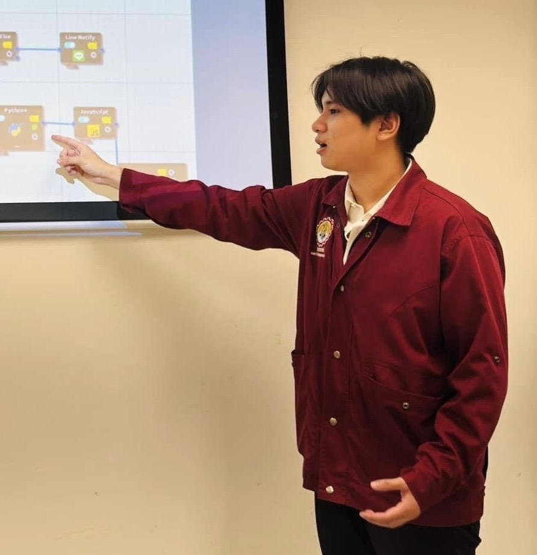
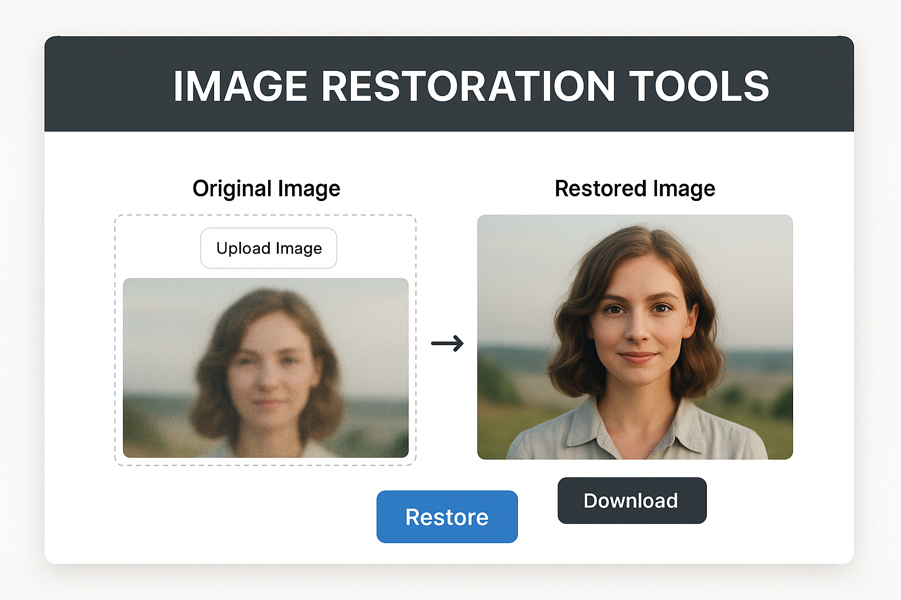
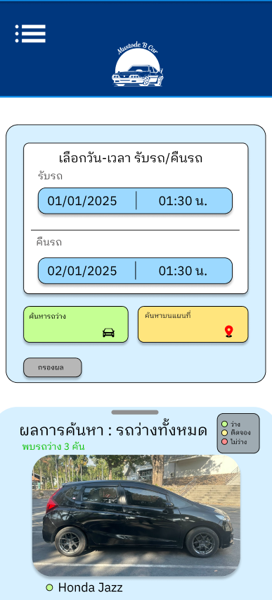
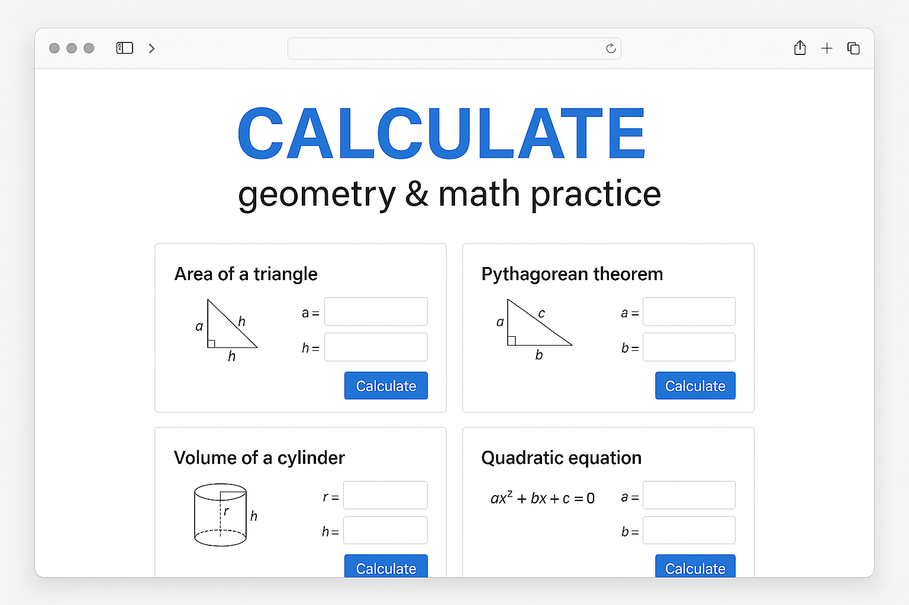
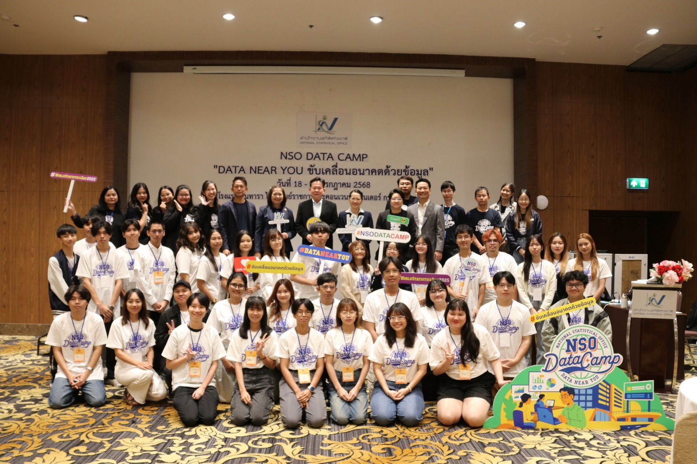
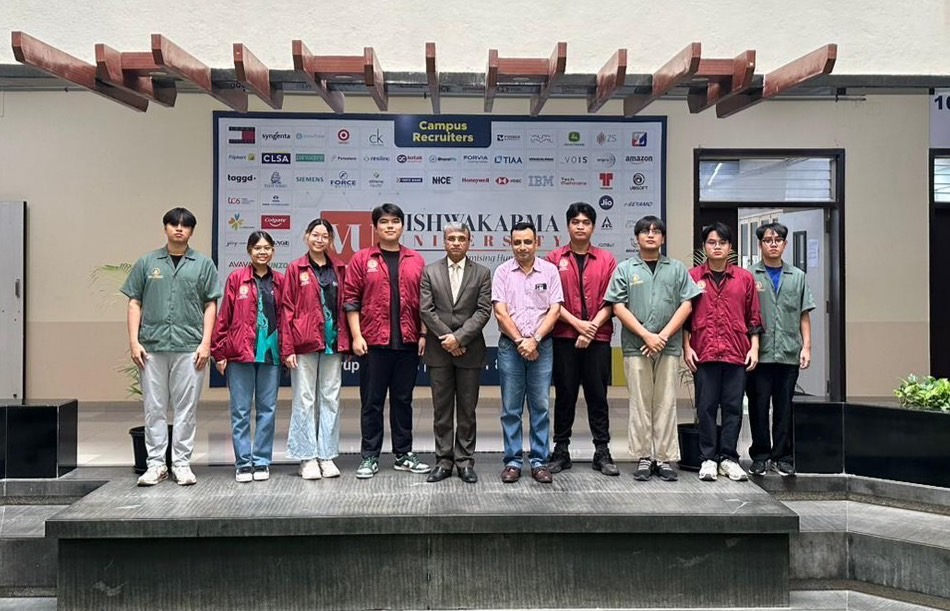
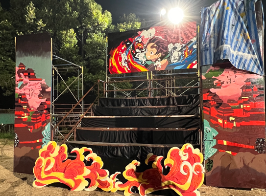
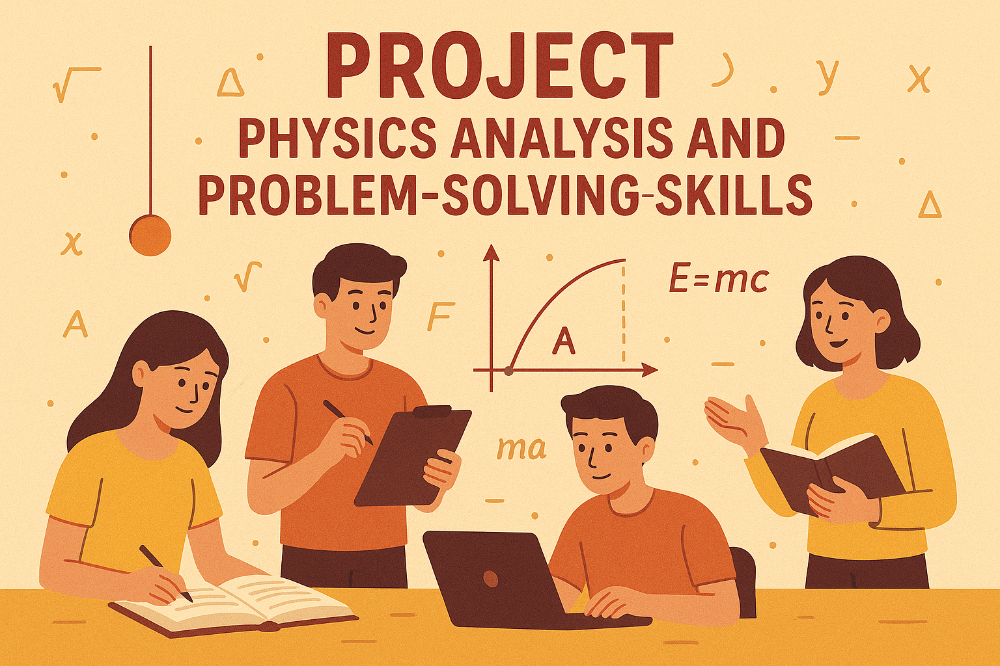

Details here...
Hello, I'm
Computer Engineering Student
Get To Know More
About Me

B.Eng. Computer Engineering Faculty of Engineering, Kasetsart University Sriracha Campus (Expected Graduation: 2026) GPAX: 3.18
I am a computer engineering student, 21 years old who is interested in technology and programming. I currently have basic programming skills and am constantly learning and improving myself. I love coding and always find time to improve myself. I am a responsible person and am always eager to learn new things.
Browse My Recent

A tool for restoring deteriorated images using three appropriate machine learning models.

An app that allows vehicle rentals uses map data to determine the user's location.
Smart IOT project takes care of plant growth. It uses cameras to predict leaf diseases and can provide fertilizers, medicines and water via wireless network.
This project is about analyzing data on characteristics of cancer cell types and performing visualizations.
The device detects humans using a camera and then uses AI to analyze and send alerts to mobile phones.
GUI window that tests and measures the performance of your computer and compares it with other computer.

GUI window calculates the area or volume of geometric shapes and can practice math.
Explore My

Camp Project to promote knowledge and skills in the use of statistical data July 2025

Research Internship Summer in India at Vishwakarma University May 2025 - June 2025

supervisor of the stand cheer maintenance design department. Nov 2023 - Dec 2023
Training in cyber defense skills and knowledge of cyber vulnerabilities and threats Sep 2023

Learn physics problem solving skills in the topic of Physics Mechanics. by university project May 2023
website
Programming Languages
tools
database
Get in Touch
napatpongct@gmail.com